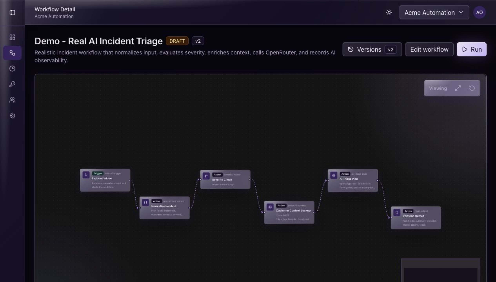
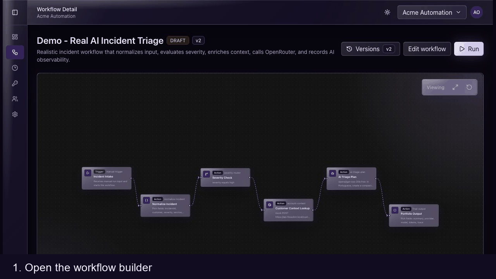
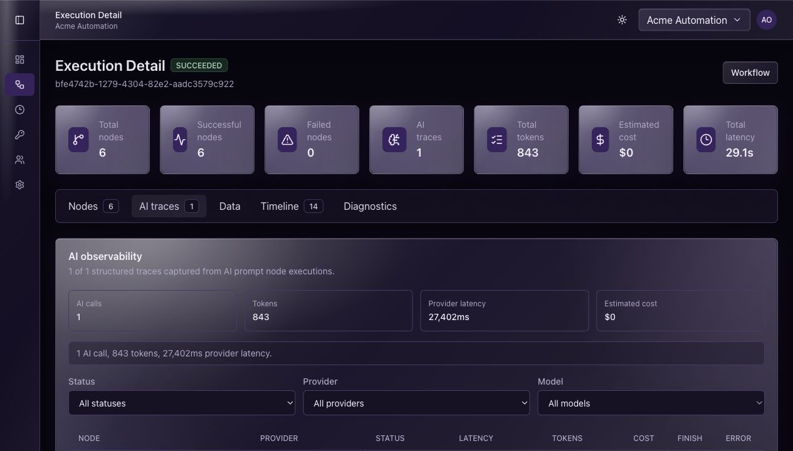
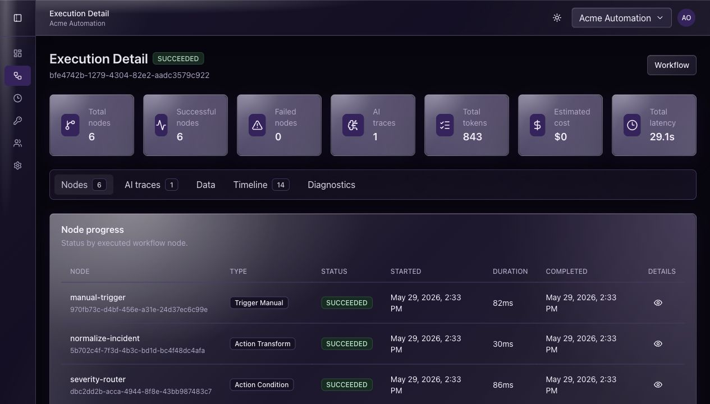
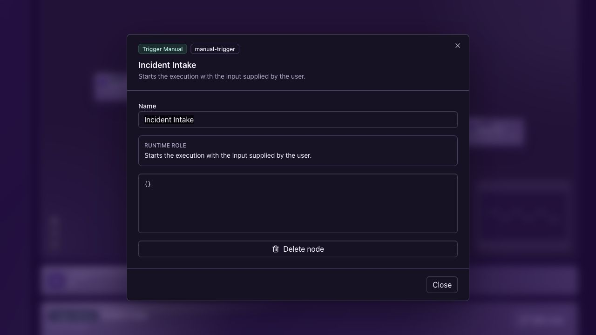

Workflow execution
Visual builder, workflow versions, manual trigger, transform, condition, HTTP, and AI prompt nodes.

Full-stack developer · AI systems · São Paulo
I build full-stack products with the backend discipline to keep them reliable and the product sense to make them useful. My current main case is FlowPilot AI: workflow automation with real LLM execution, queues, credentials, and observability.
Available for freelance builds, backend/API work, AI prototypes, and full-stack product roles.
Recent work combines TypeScript, Python, PHP/Laravel, PostgreSQL, RabbitMQ, Redis, Docker, React, Angular, and product-facing dashboards.
Featured case
A multi-tenant workflow automation platform with asynchronous execution, a Python AI orchestrator, encrypted workspace credentials, and observability for LLM calls.
I built FlowPilot AI to show how I think about applied AI in software: as one step inside a working system, with failures, secrets, cost, latency, and traceability to handle. It is not a chatbot demo. It is a product-shaped architecture exercise.
Visual builder, workflow versions, manual trigger, transform, condition, HTTP, and AI prompt nodes.
RabbitMQ worker execution with retries, dead-letter handling, idempotency, and lifecycle events.
OpenRouter-backed prompt node through FastAPI, with traces for provider, model, tokens, status, latency, and estimated cost.




Selected work
I picked the repositories with the clearest product shape, meaningful implementation, tests, or architecture signals. The older ones stay honest about scope; the newer ones show where my work is heading.
Full-stack PDF question-answering app with upload, MinIO object storage, text extraction, and LLM answers grounded in the selected document.
Private messaging app with Laravel, Inertia/React, authenticated API routes, message persistence, and realtime delivery through broadcast channels.
Product and category management split across an Angular Material frontend and a NestJS API with Prisma, JWT auth, validation, and tests.
Laravel API foundation for an investment dashboard with Fortify/Sanctum auth, role-based routes, Docker, migrations, and JSON response middleware.
TCC project pairing an Expo/React Native frontend with a Java Spring Boot backend for a service-oriented mobile product.
React/Vite TypeScript app for browsing Pokémon types, pagination, routing, reusable UI pieces, and focused component tests.
How I can help
NestJS, Laravel, Express, FastAPI, REST APIs, auth, RBAC, Prisma, PostgreSQL, queues, jobs, and integration boundaries.
React, Vite, Angular, Inertia, TypeScript, forms, dashboards, admin panels, workflow UIs, and responsive frontends that stay usable.
LLM provider abstraction, prompt nodes, OpenRouter, document Q&A, observability, token/latency tracking, and room to grow into RAG and model comparison.
Docker Compose, GitHub Actions, tests where they matter, readable docs, demo seeds, and architecture choices that can be explained in an interview.
Freelance and hiring
I am open to freelance projects, backend-heavy full-stack work, AI-enabled product prototypes, and software engineering roles. For private repo access or a code walkthrough, reach me through GitHub or the platform where you found this portfolio.